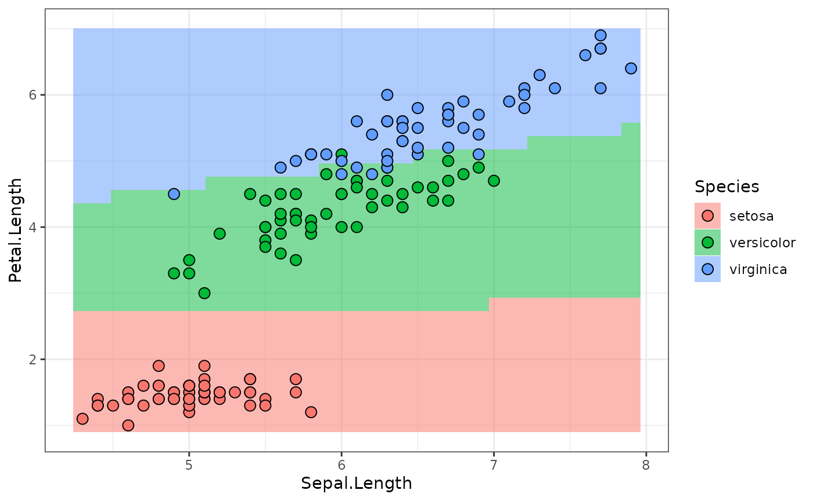
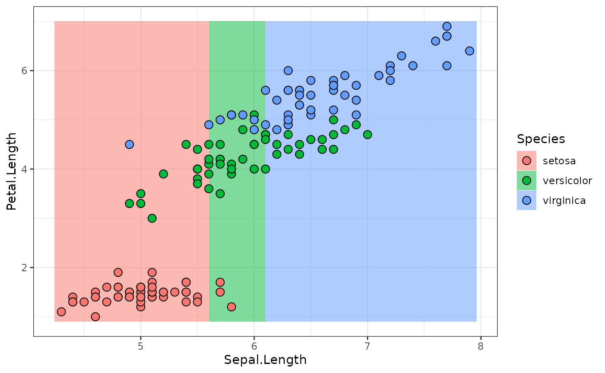

This vignette contains technical details about the inner workings of
representing neural networks as mlr3pipelines::Graphs. If
you are not familiar with mlr3pipelines, start by reading
the related
sections from the mlr3 book first.
A torch Primer
We start by sampling some input tensor: 2 batches with 3 features:
input = torch_randn(2, 3)
input
#> torch_tensor
#> -1.8520 -0.5971 2.1272
#> -0.0564 0.5666 0.0558
#> [ CPUFloatType{2,3} ]A nn_module is constructed from a
nn_module_generator. nn_linear is one of the
simpler generators:
module_1 = nn_linear(in_features = 3, out_features = 4, bias = TRUE)Applying this module gives a 2-batch of 4 units:
output = module_1(input)
output
#> torch_tensor
#> -0.2433 -1.0929 -2.5212 -1.4694
#> -0.4630 -0.2973 -0.6413 -0.7689
#> [ CPUFloatType{2,4} ][ grad_fn = <AddmmBackward0> ]A neural network with one (4-unit) hidden layer and two outputs needs the following ingredients
activation = nn_sigmoid()
module_2 = nn_linear(4, 3, bias = TRUE)
softmax = nn_softmax(2)We can pipe a tensor through the layers as follows.
output = module_1(input)
output = activation(output)
output = module_2(output)
output = softmax(output)
output
#> torch_tensor
#> 0.2600 0.3019 0.4381
#> 0.2538 0.3026 0.4436
#> [ CPUFloatType{2,3} ][ grad_fn = <SoftmaxBackward0> ]We will now continue with showing how such a neural network can be
represented in mlr3torch.
Neural Networks as Graphs
In mlr3torch, nn_modules are wrapped in a
PipeOpModule. This has the advantage that the network
structure can be represented as an mlr3pipelines::Graph
object where it is made explicit (can be plotted, can be extended or
manipulated), compared to e.g. writing a function that pipes input
through a series of modules.
A PipeOpModule can be used to wrap a module directly,
but it is usually constructed by a PipeOpTorch (see later).
It typically has a single input and a single output, although multiple
inputs are possible (module is then called with multiple arguments), and
multiple outputs are possible when the module-function returns a list.
The input and output channels must be explicitly declared then during
construction. We will now continue to recreate the above network using
PipeOpModules.
We can wrap the linear module_1 layers like this:
Note that po("module_1") is equivalent to
po("module", id = "module_1"). This mechanism is convenient
to avoid ID clashes in graphs that contain the same PipeOp
multiple times.
We can use the generated PipeOp in the familiar way:
output = po_module_1$train(list(input))[[1]]
output
#> torch_tensor
#> -0.2433 -1.0929 -2.5212 -1.4694
#> -0.4630 -0.2973 -0.6413 -0.7689
#> [ CPUFloatType{2,4} ][ grad_fn = <AddmmBackward0> ]Note we only use the $train(), since torch modules do
not have anything that maps to the state (it is filled by
an empty list).
The single hidden layer neural network can be constructed as a
Graph, which can then do the training all at once.
po_activation = po("module", id = "activation", activation)
po_module_2 = po("module_2", module = module_2)
po_softmax = po("module", id = "softmax", module = softmax)
module_graph = po_module_1 %>>%
po_activation %>>%
po_module_2 %>>%
po_softmax
module_graph$plot(html = TRUE)We can now use the graph’s $train() method to pipe a
tensor through the whole Graph.
output = module_graph$train(input)[[1]]
output
#> torch_tensor
#> 0.2600 0.3019 0.4381
#> 0.2538 0.3026 0.4436
#> [ CPUFloatType{2,3} ][ grad_fn = <SoftmaxBackward0> ]While this object allows to easily perform a forward pass, it does
not inherit from nn_module, which is useful for various
reasons. Instead of having a class that inherits both from
nn_module and Graph (which does not work in
R6, since multiple inheritance is not available), there is a class that
inherits from nn_module and contains a Graph
member slot through composition. This class is nn_graph. It
is constructed with a Graph, as well as information about
the shape(s) of the torch_tensor(s) it expects as
inputs.
Shape info is communicated as an integer-valued numeric
vector; dimensions that are arbitrary, e.g. batch-size, is given as
NA. Our network expects an input of shape
c(NA, 3), since the first layer was created as
nn_linear(in_features = 3, ...).
If the Graph has multiple outputs, it is also possible
to select a subset of outputs to use, or change the output order, by
giving the output_map argument.
# the name of the single input is:
module_graph$input
#> name train predict op.id channel.name
#> <char> <char> <char> <char> <char>
#> 1: module_1.input torch_tensor NULL module_1 input
graph_module = nn_graph(
module_graph,
shapes_in = list(module_1.input = c(NA, 3))
)This module gives us the convenience of torch nn_module
objects, e.g.:
graph_module$children
#> $module_list
#> An `nn_module` containing 31 parameters.
#>
#> ── Modules ─────────────────────────────────────────────────────────────────────
#> • 0: <nn_linear> #16 parameters
#> • 1: <nn_sigmoid> #0 parameters
#> • 2: <nn_linear> #15 parameters
#> • 3: <nn_softmax> #0 parametersAnd it can be used to transform tensors just as any other
torch::nn_module:
graph_module(input)
#> torch_tensor
#> 0.2600 0.3019 0.4381
#> 0.2538 0.3026 0.4436
#> [ CPUFloatType{2,3} ][ grad_fn = <SoftmaxBackward0> ]Building Torch Models for Tasks using PipeOpTorch
ModelDescriptor
The PipeOpModule represents an nn_module
that is fixed for a specific tensor shape and which has no
hyperparameters. When constructing a neural network using these
operators, one has to take care to have the output shape of operations
match the input shapes of the following operations.
A complete Graph of matching PipeOpModules
can be constructed using operators that mostly inherit from
PipeOpTorch, making use of the ModelDescriptor
class. The ModelDescriptor class contains a
Graph of (mostly) PipeOpModules and some other
information. The PipeOpTorch transforms a
ModelDescriptor and adds more PipeOpModules to
the Graph.
ModelDescriptors always build up a Graph
for a specific Task. The easiest way to initialize a proper
ModelDescriptor is to use the appropriate
PipeOpTorchIngress for a given datatype. Below we use
PipeOpTorchIngressNumeric, which is is is used for numeric
data.
task = tsk("iris")$select(colnames(iris)[1:3])
po_torch_in = po("torch_ingress_num")
md = po_torch_in$train(list(task))[[1]]
md
#> <ModelDescriptor: 1 ops>
#> * Ingress: torch_ingress_num.input: [(NA,3)]
#> * Task: iris [classif]
#> * Callbacks: N/A
#> * Optimizer: N/A
#> * Loss: N/A
#> * pointer: torch_ingress_num.output [(NA,3)]The ModelDescriptor is an S3 object that contains a
Graph, information about how to generate data
($ingress and $task), some further tags about
how to build a model that are unrelated to architecture
($optimizer, $loss and
$callbacks) as well as all further information necessary to
extend that graph along a given output ($pointer and
$pointer_shape).
unclass(md)
#> $graph
#> Graph with 1 PipeOps:
#> ID State sccssors prdcssors
#> <char> <char> <char> <char>
#> torch_ingress_num <<UNTRAINED>>
#>
#> $ingress
#> $ingress$torch_ingress_num.input
#> Ingress: Task[selector_name(c("Petal.Length", "Sepal.Length", "Sepal.Width"), assert_present = TRUE)] --> Tensor(NA, 3)
#>
#>
#> $task
#>
#> ── <TaskClassif> (150x4): Iris Flowers ─────────────────────────────────────────
#> • Target: Species
#> • Target classes: setosa (33%), versicolor (33%), virginica (33%)
#> • Properties: multiclass
#> • Features (3):
#> • dbl (3): Petal.Length, Sepal.Length, Sepal.Width
#>
#> $optimizer
#> NULL
#>
#> $loss
#> NULL
#>
#> $callbacks
#> named list()
#>
#> $pointer
#> [1] "torch_ingress_num" "output"
#>
#> $pointer_shape
#> [1] NA 3The $pointer identifies the output of the
$graph that PipeOpTorch will extend. Piping
this ModelDescriptor through
PipeOpTorchLinear, for example, adds a
PipeOpModule wrapping a torch::nn_linear.
po_torch_linear = po("nn_linear", out_features = 4)
md = po_torch_linear$train(list(md))[[1]]
md$graph
#> Graph with 2 PipeOps:
#> ID State sccssors prdcssors
#> <char> <char> <char> <char>
#> torch_ingress_num <<UNTRAINED>> nn_linear
#> nn_linear <<UNTRAINED>> torch_ingress_numThe $pointer is now updated to identify the output of
that PipeOpModule, and the $pointer_shape
shows that the shape has changed to 4 units (was 3 for the input
before).
md$pointer
#> [1] "nn_linear" "output"
md$pointer_shape
#> [1] NA 4The model_descriptor_to_module() function converts this
to an nn_graph, it is a functional
torch::nn_module.
small_module = model_descriptor_to_module(md, list(md$pointer))
small_module(input)
#> torch_tensor
#> 1.4207 -0.0052 -0.0986 -0.5160
#> 0.6002 0.4710 0.1887 0.3873
#> [ CPUFloatType{2,4} ][ grad_fn = <AddmmBackward0> ]Using ModelDescriptor to get Data
The ModelDescriptor does not only represent the
Graph from which a nn_module is created, but
also the way in which the Task is is processed to get input
batches. A torch::dataset can be created by calling
task_dataset(); both the task and the
feature_ingress_tokens arguments can be retrieved from the
ModelDescriptor. The target_batchgetter needs
to be created extra (if necessary), since it depends on the ultimate
machine learning model, which we have not looked at so far.
td = task_dataset(
task = md$task,
feature_ingress_tokens = md$ingress
)
td
#> <task_dataset>
#> Inherits from: <dataset>
#> Public:
#> .getbatch: function (index)
#> .getitem: function (index)
#> .length: function ()
#> all_features: Petal.Length Sepal.Length Sepal.Width Species
#> cache_lazy_tensors: FALSE
#> clone: function (deep = FALSE)
#> feature_ingress_tokens: list
#> initialize: function (task, feature_ingress_tokens, target_batchgetter = NULL)
#> load_state_dict: function (x, ..., .refer_to_state_dict = FALSE)
#> state_dict: function ()
#> target_batchgetter: NULL
#> task: TaskClassif, TaskSupervised, Task, R6Use the $.getbatch() method to get a batch that can be
given to the nn_module. Note it has an $x and
an $y slot, the latter of which is not used, to account for
possible target batches. The $x slot is also a
list, since it should be able to handle NNs with multiple
inputs (see below).
batch = td$.getbatch(1:3)
batch
#> $x
#> $x$torch_ingress_num.input
#> torch_tensor
#> 1.4000 5.1000 3.5000
#> 1.4000 4.9000 3.0000
#> 1.3000 4.7000 3.2000
#> [ CPUFloatType{3,3} ]
#>
#>
#> $.index
#> torch_tensor
#> 1
#> 2
#> 3
#> [ CPULongType{3} ]
small_module(batch$x[[1]])
#> torch_tensor
#> 1.9002 0.8328 -0.1584 -0.7467
#> 1.7256 0.8871 -0.1164 -0.5854
#> 1.7816 0.7929 -0.1231 -0.6396
#> [ CPUFloatType{3,4} ][ grad_fn = <AddmmBackward0> ]Building sequential NNs
The sequential NN from above can easily be implemented as follows:
graph_generator = po("torch_ingress_num") %>>%
po("nn_linear", out_features = 4, id = "linear1") %>>%
po("nn_sigmoid") %>>%
po("nn_linear", out_features = 3, id = "linear2") %>>%
po("nn_softmax", dim = 2)Note how the second nn_linear does not need to be
informed about the output dimension of the first nn_linear,
since the ModelDescriptor that is passed along the
Graph edges knows this info (in the
$pointer_shape slot).
md_sequential = graph_generator$train(task)[[1]]
graph_module = model_descriptor_to_module(md_sequential, list(md_sequential$pointer))
graph_module(input)
#> torch_tensor
#> 0.5494 0.2297 0.2208
#> 0.5346 0.1971 0.2683
#> [ CPUFloatType{2,3} ][ grad_fn = <SoftmaxBackward0> ]Building more interesting NNs
One of the main features of mlr3pipelines is its ability
to easily represent computational Graphs. The
ModelDescriptor / PipeOpTorch setup is built
to make full use of this functionality. It is possible to have multiple
inputs into a NN by using multiple PipeOpTorchIngress
inputs, it is possible to have parallel and alternative path branching,
and it is possible to have multiple outputs.
Consider the following (a bit nonsensical) network that operates
differently on the "Petal" than on the "Sepal"
features of tsk("iris") We manually split the task here,
further down it is shown that the wholly integrated
mlr3pipelines pipeline can do this automatically.
iris_petal = tsk("iris")$select(c("Petal.Length", "Petal.Width"))
iris_sepal = tsk("iris")$select(c("Sepal.Length", "Sepal.Width"))
graph_sepal = po("torch_ingress_num", id = "sepal.in") %>>%
po("nn_linear", out_features = 4, id = "linear1")
graph_petal = po("torch_ingress_num", id = "petal.in") %>>%
po("nn_linear", out_features = 3, id = "linear2") %>>%
po("nn_tanh") %>>%
po("nn_linear", out_features = 5, id = "linear3")
graph_common = ppl("branch", graphs = list(
sigmoid = po("nn_sigmoid"),
relu = po("nn_relu")
)) %>>%
gunion(list(
po("nn_linear", out_features = 1, id = "lin_out"),
po("nn_linear", out_features = 3, id = "cat_out") %>>%
po("nn_softmax", dim = 2)
))
graph_iris = gunion(list(graph_sepal, graph_petal)) %>>%
po("nn_merge_cat") %>>%
graph_common
graph_iris$plot(html = TRUE)We can use this to create a neural network for the iris
tasks we created above. We set the $keep_results debug flag
here so we can do some inspection about what is happening:
graph_iris$param_set$values$branch.selection = "relu"
graph_iris$keep_results = TRUE
iris_mds = graph_iris$train(
input = list(sepal.in.input = iris_sepal, petal.in.input = iris_petal),
single_input = FALSE
)
iris_mds
#> $lin_out.output
#> <ModelDescriptor: 11 ops>
#> * Ingress: sepal.in.input: [(NA,2)], petal.in.input: [(NA,2)]
#> * Task: iris [classif]
#> * Callbacks: N/A
#> * Optimizer: N/A
#> * Loss: N/A
#> * pointer: lin_out.output [(NA,1)]
#>
#> $nn_softmax.output
#> <ModelDescriptor: 11 ops>
#> * Ingress: sepal.in.input: [(NA,2)], petal.in.input: [(NA,2)]
#> * Task: iris [classif]
#> * Callbacks: N/A
#> * Optimizer: N/A
#> * Loss: N/A
#> * pointer: nn_softmax.output [(NA,3)]We make multiple observations here:
-
We can observe how the
ModelDescriptorgrows as it is passed along the edges ofgraph_iris. Note that the$graphslot of thatModelDescriptoris often updated by-reference, so by the time we inspect intermediate results, they may contain the complete graph. However, see how the$ingress,$pointerand$pointer_shapeof theModelDescriptors that take thesepal.in-path differ from the ones that take thepetal.in-path:# sepal.in path graph_iris$pipeops$linear1$.result[[1]]$ingress #> $sepal.in.input #> Ingress: Task[selector_name(c("Sepal.Length", "Sepal.Width"), assert_present = TRUE)] --> Tensor(NA, 2) graph_iris$pipeops$linear1$.result[[1]]$pointer #> [1] "linear1" "output" graph_iris$pipeops$linear1$.result[[1]]$pointer_shape #> [1] NA 4 # petal.in path graph_iris$pipeops$linear3$.result[[1]]$ingress #> $petal.in.input #> Ingress: Task[selector_name(c("Petal.Length", "Petal.Width"), assert_present = TRUE)] --> Tensor(NA, 2) graph_iris$pipeops$linear3$.result[[1]]$pointer #> [1] "linear3" "output" graph_iris$pipeops$linear3$.result[[1]]$pointer_shape #> [1] NA 5po("nn_merge_cat")unites the twoModelDescriptors and contains the common ingress. Thepointer_shapenow reflects the output of the “cat”-operation: the 2nd dimension is added up:graph_iris$pipeops$nn_merge_cat$.result[[1]]$ingress #> $sepal.in.input #> Ingress: Task[selector_name(c("Sepal.Length", "Sepal.Width"), assert_present = TRUE)] --> Tensor(NA, 2) #> #> $petal.in.input #> Ingress: Task[selector_name(c("Petal.Length", "Petal.Width"), assert_present = TRUE)] --> Tensor(NA, 2) graph_iris$pipeops$nn_merge_cat$.result[[1]]$pointer_shape #> [1] NA 9 -
Multiple
ModelDescriptors were created, since thegraph_irishas multiple outpus. This makes it possible to create a neural network with multiple outputs. We need to unite the outputs ofgraph_irisusingmodel_descriptor_union()before we can pass it tomodel_descriptor_to_module(). We need to collect alloutput_pointersseparately.The parameter
list_outputmust be set toTRUEsince the module has multiple outputs.iris_mds_union = model_descriptor_union(iris_mds[[1]], iris_mds[[2]]) output_pointers = list(iris_mds[[1]]$pointer, iris_mds[[2]]$pointer) output_pointers #> [[1]] #> [1] "lin_out" "output" #> #> [[2]] #> [1] "nn_softmax" "output" iris_module = model_descriptor_to_module(iris_mds_union, output_pointers, list_output = TRUE) -
The
PipeOpBranchdisappears in the resultingGraphofPipeOpModulein theiris_module. This is because only thePipeOpTorchs in thegraph_irisadd anything to theModelDescriptors. The branch is interpeted whengraph_irisruns, and only thenn_relupath is followed. Theiris_moduletherefore contains aGraphthat does “relu” activation:iris_module$graph$plot(html = TRUE) -
The
ModelDescriptor’s$taskslot contains aTaskwith all features that are used to create the input data for all NN inputs. It can be given totask_dataset(), along with the$ingress, to create atorchdatasetthat creates all batches. As above, any output ofgraph_iriscan be used:iris_mds_union$task # contains all features #> #> ── <TaskClassif> (150x5): Iris Flowers ───────────────────────────────────────── #> • Target: Species #> • Target classes: setosa (33%), versicolor (33%), virginica (33%) #> • Properties: multiclass #> • Features (4): #> • dbl (4): Petal.Length, Petal.Width, Sepal.Length, Sepal.Width iris_td = task_dataset( task = iris_mds_union$task, feature_ingress_tokens = iris_mds_union$ingress ) batch = iris_td$.getbatch(1:2) batch #> $x #> $x$sepal.in.input #> torch_tensor #> 5.1000 3.5000 #> 4.9000 3.0000 #> [ CPUFloatType{2,2} ] #> #> $x$petal.in.input #> torch_tensor #> 1.4000 0.2000 #> 1.4000 0.2000 #> [ CPUFloatType{2,2} ] #> #> #> $.index #> torch_tensor #> 1 #> 2 #> [ CPULongType{2} ] -
The resulting module has multiple inputs and multiple outputs. We call it with the first two rows of iris, but set the debug
$keep_resultsflag so we can inspect what is happening in thenn_module’s$graph:iris_module$graph$keep_results = TRUE iris_module( sepal.in.input = batch$x$sepal.in.input, petal.in.input = batch$x$petal.in.input ) #> $lin_out.output #> torch_tensor #> -0.8596 #> -0.7547 #> [ CPUFloatType{2,1} ][ grad_fn = <AddmmBackward0> ] #> #> $nn_softmax.output #> torch_tensor #> 0.0224 0.4094 0.5682 #> 0.0274 0.4149 0.5577 #> [ CPUFloatType{2,3} ][ grad_fn = <SoftmaxBackward0> ]The first linear layer that takes “Sepal” input (
"linear1") creates a 2x4 tensor (batch size 2, 4 units), while the"linear3"layer has 2x5 output:iris_module$graph$pipeops$linear1$.result #> $output #> torch_tensor #> -2.2473 -0.5947 4.3355 0.5175 #> -1.9323 -0.6887 3.9716 0.5123 #> [ CPUFloatType{2,4} ][ grad_fn = <AddmmBackward0> ] iris_module$graph$pipeops$linear3$.result #> $output #> torch_tensor #> 0.01 * #> -5.5942 -64.3158 0.9635 -0.7456 -39.0904 #> -5.5942 -64.3158 0.9635 -0.7456 -39.0904 #> [ CPUFloatType{2,5} ][ grad_fn = <AddmmBackward0> ]We observe that the
po("nn_merge_cat")concatenates these, as expected:iris_module$graph$pipeops$nn_merge_cat$.result #> $output #> torch_tensor #> -2.2473 -0.5947 4.3355 0.5175 -0.0559 -0.6432 0.0096 -0.0075 -0.3909 #> -1.9323 -0.6887 3.9716 0.5123 -0.0559 -0.6432 0.0096 -0.0075 -0.3909 #> [ CPUFloatType{2,9} ][ grad_fn = <CatBackward0> ]
Building Torch Learners
We have now seen how NN Graphs of
PipeOpModule are created and turned into
nn_modules. Using PipeOpTorch even creates
ModelDescriptor objects that contain additional info about
how batch tensors are extracted from Tasks. For a complete
Learner, it is still necessary to define the loss-function
used for optimization, the optimizer, and optionally some callbacks. We
have already covered their class representations –
TorchLoss, TorchOptimizer,
TorchCallbacks, in the Get Started vignette. Here
we use adam as the optimizer, cross-entropy as the loss function, and
the history callback.
adam = t_opt("adam", lr = 0.02)
adam
#> <TorchOptimizer:adam> Adaptive Moment Estimation
#> * Generator: optim_ignite_adam
#> * Parameters: lr=0.02
#> * Packages: torch,mlr3torch
xe = t_loss("cross_entropy")
xe
#> <TorchLoss:cross_entropy> Cross Entropy
#> * Generator: function
#> * Parameters: list()
#> * Packages: torch,mlr3torch
#> * Task Types: classif
history = t_clbk("history")
history
#> <TorchCallback:history> History
#> * Generator: CallbackSetHistory
#> * Parameters: list()
#> * Packages: mlr3torch,torch
LearnerTorchModel
LearnerTorchModel represents a supervised model
(regression or classification) using torch NNs. It needs a
nn_module, as well as a list of
TorchIngressToken that define how batches are created from
a Task. TorchIngressToken hard-code the
column-names of a Task that are used for data-input, the
Learner created like this therefore only works for the
specific Task created. (Generally the full
mlr3pipelines-UI should be used if this is a problem, see
below.) The following uses the sequential NN from above:
lr_sequential = lrn("classif.torch_model",
task_type = "classif",
network = model_descriptor_to_module(md_sequential, list(md_sequential$pointer)),
ingress_tokens = md_sequential$ingress,
optimizer = adam,
callbacks = history,
loss = xe
)
lr_sequential
#>
#> ── <LearnerTorchModel> (classif.model): Torch Model ────────────────────────────
#> • Model: -
#> • Parameters: device=auto, num_threads=1, num_interop_threads=1, seed=random,
#> eval_freq=1, measures_train=<list>, measures_valid=<list>, patience=0,
#> min_delta=0, shuffle=TRUE, tensor_dataset=FALSE, jit_trace=FALSE, opt.lr=0.02
#> • Validate: NULL
#> • Packages: mlr3, mlr3torch, and torch
#> • Predict Types: [response] and prob
#> • Feature Types: logical, integer, numeric, character, factor, ordered,
#> POSIXct, Date, and lazy_tensor
#> • Encapsulation: none (fallback: -)
#> • Properties: featureless, hotstart_backward, hotstart_forward, importance,
#> internal_tuning, marshal, missings, multiclass, offset, oob_error,
#> selected_features, twoclass, validation, and weights
#> • Other settings: use_weights = 'use'
#> * Optimizer: adam
#> * Loss: cross_entropy
#> * Callbacks: historyBefore training the model, we set some more hyperparameters.
lr_sequential$param_set$set_values(
batch_size = 50,
epochs = 100,
measures_train = msrs(c("classif.logloss", "classif.ce"))
)
# This is required to evaluate the logloss during training
lr_sequential$predict_type = "prob"
lr_sequential$train(md_sequential$task)The following calls the $predict_newdata function to
plot the response surface along the
Sepal.Width = mean(Sepal.Width) plane, along with the
ground-truth values:
library(data.table)
library(ggplot2)
newdata = cbind(data.table(Sepal.Width = mean(iris$Sepal.Width)), CJ(
Sepal.Length = seq(min(iris$Sepal.Length), max(iris$Sepal.Length), length.out = 30),
Petal.Length = seq(min(iris$Petal.Length), max(iris$Petal.Length), length.out = 30)
))
predictions = lr_sequential$predict_newdata(newdata)
plot_predictions = function(predictions) {
ggplot(cbind(newdata, Species = predictions$response),
aes(x = Sepal.Length, y = Petal.Length, fill = Species)) +
geom_tile(alpha = .3) +
geom_tile(alpha = .3) +
geom_point(data = iris,
aes(x = Sepal.Length, y = Petal.Length, fill = Species),
color = "black", pch = 21, size = 3) +
theme_bw()
}
plot_predictions(predictions)
Torch Learner Pipelines
The model shown above is constructed using the
ModelDescriptor that is generated from a Graph
of PipeOpTorch operators. The ModelDescriptor
furthermore contains the Task to which it pertains. This
makes it possible to use it to create a NN model that gets trained right
away, using PipeOpTorchModelClassif. The only missing
prerequisite now is to add the desired TorchOptimizer and
TorchLoss information to the
ModelDescriptor.
Adding Optimizer, Loss and Callback Meta-Info to
ModelDescriptor
Remember that ModelDescriptor has the
$optimizer, $loss and $callbacks
slots that are necessary to build a complete Learner from
an NN. They can be set by corresponding PipeOpTorch
operators.
po("torch_optimizer") is used to set the
$optimizer slot of a ModelDescriptor; it takes
the desired TorchOptimizer object on construction and
exports its ParamSet.
po_adam = po("torch_optimizer", optimizer = adam)
# hyperparameters are made available and can be changed:
po_adam$param_set$values
#> $lr
#> [1] 0.02
md_sequential = po_adam$train(list(md_sequential))[[1]]
md_sequential$optimizer
#> <TorchOptimizer:adam> Adaptive Moment Estimation
#> * Generator: optim_ignite_adam
#> * Parameters: lr=0.02
#> * Packages: torch,mlr3torchThis works analogously for the loss-function.
po_xe = po("torch_loss", loss = xe)
md_sequential = po_xe$train(list(md_sequential))[[1]]
md_sequential$loss
#> <TorchLoss:cross_entropy> Cross Entropy
#> * Generator: function
#> * Parameters: list()
#> * Packages: torch,mlr3torch
#> * Task Types: classifAnd also for callbacks:
Combined Instantiation and Training of
LearnerTorchModel
The ModelDescriptor can now be given to a
po("torch_model_classif").
po_model = po("torch_model_classif", batch_size = 50, epochs = 50)
po_model$train(list(md_sequential))
#> $output
#> NULLpo("torch_model_classif") behaves similarly to a
PipeOpLearner: It returns NULL during
training, and the prediction on $predict().
po("torch_model_classif") behaves similarly to a
PipeOpLearner: It returns NULL during
training, and the prediction on $predict().
newtask = TaskClassif$new("newdata", cbind(newdata, Species = factor(NA, levels = levels(iris$Species))), target = "Species")
predictions = po_model$predict(list(newtask))[[1]]
plot_predictions(predictions)
The whole Pipeline
Remember that md_sequential was created using a
Graph that the initial Task was piped through.
If we combine such a Graph with
PipeOpTorchModelClassif, we get a Graph that
behaves like any other Graph that ends with a
PipeOpLearner, and can therefore be wrapped as a
GraphLearner. The following uses one more hidden layer than
before:
graph_sequential_full = po("torch_ingress_num") %>>%
po("nn_linear", out_features = 4, id = "linear1") %>>%
po("nn_sigmoid") %>>%
po("nn_linear", out_features = 3, id = "linear2") %>>%
po("nn_softmax", dim = 2, id = "softmax") %>>%
po("nn_linear", out_features = 3, id = "linear3") %>>%
po("nn_softmax", dim = 2, id = "softmax2") %>>%
po("torch_optimizer", optimizer = adam) %>>%
po("torch_loss", loss = xe) %>>%
po("torch_callbacks", callbacks = history) %>>%
po("torch_model_classif", batch_size = 50, epochs = 100)
lr_sequential_full = as_learner(graph_sequential_full)
lr_sequential_full$train(task)Compare the resulting Graph
graph_sequential_full$plot(html = TRUE)With the Graph of the trained model:
model = lr_sequential_full$graph_model$state$torch_model_classif$model
model$network$graph$plot(html = TRUE)Predictions, as before (we can use predict_newdata
again):
predictions = lr_sequential_full$predict_newdata(newdata)
plot_predictions(predictions)
Mixed Pipelines
We are not just limited to PipeOpTorch in these kinds of
Graphs, and we are also not limited to having only a single
PipeOpTorchIngress. The following pipeline, for example,
removes all but the Petal.Length columns from the
Task and fits a model:
gr = po("select", selector = selector_name("Petal.Length")) %>>%
po("torch_ingress_num") %>>%
po("nn_linear", out_features = 5, id = "linear1") %>>%
po("nn_relu") %>>%
po("nn_linear", out_features = 3, id = "linear2") %>>%
po("nn_softmax", dim = 2) %>>%
po("torch_optimizer", optimizer = adam) %>>%
po("torch_loss", loss = xe) %>>%
po("torch_model_classif", batch_size = 50, epochs = 50)
gr$plot(html = TRUE)
lr = as_learner(gr)
lr$train(task)
predictions = lr$predict_newdata(newdata)
plot_predictions(predictions)
How about using Petal.Length and
Sepal.Length separately at first?
gr = gunion(list(
po("select", selector = selector_name("Petal.Length"), id = "sel1") %>>%
po("torch_ingress_num", id = "ingress.petal") %>>%
po("nn_linear", out_features = 3, id = "linear1"),
po("select", selector = selector_name("Sepal.Length"), id = "sel2") %>>%
po("torch_ingress_num", id = "ingress.sepal") %>>%
po("nn_linear", out_features = 3, id = "linear2")
)) %>>%
po("nn_merge_cat") %>>%
po("nn_relu", id = "act1") %>>%
po("nn_linear", out_features = 3, id = "linear3") %>>%
po("nn_softmax", dim = 2, id = "act3") %>>%
po("torch_optimizer", optimizer = adam, lr = 0.1) %>>%
po("torch_loss", loss = xe) %>>%
po("torch_model_classif", batch_size = 50, epochs = 50)
gr$plot(html = TRUE)
lr = as_learner(gr)
lr$train(task)
predictions = lr$predict_newdata(newdata)
plot_predictions(predictions)
All these examples have hopefully demonstrated the possibilities that
come with the representation of neural network layers as
PipeOps. Even though this vignette was quite technical, we
hope to have given you an in-depth understanding of the underlying
mechanisms.